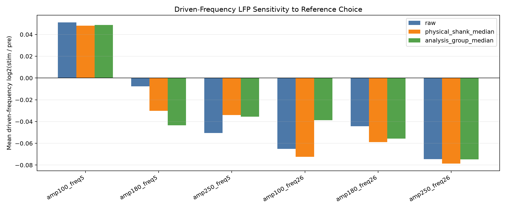
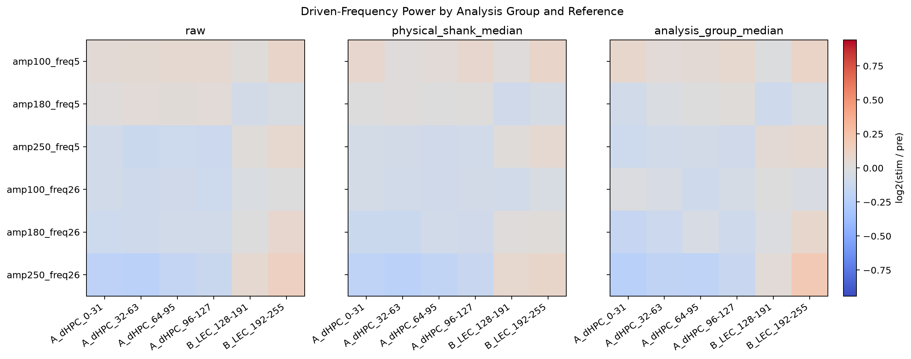

Excluded channels from candidate_bad_channels: [121, 128, 129, 130, 131, 132, 133, 134, 135, 137, 138, 139, 140, 141, 224, 225, 226, 227, 228, 229, 230, 231, 232, 233, 234, 235, 236, 237, 238, 239, 240, 241, 242, 243, 244, 245, 246, 247, 248, 249, 250, 251, 252, 253, 254, 255]
Values are driven-frequency log2(stim power / pre power).

